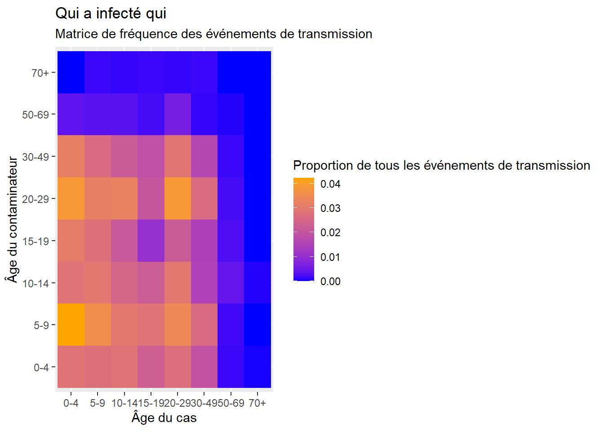
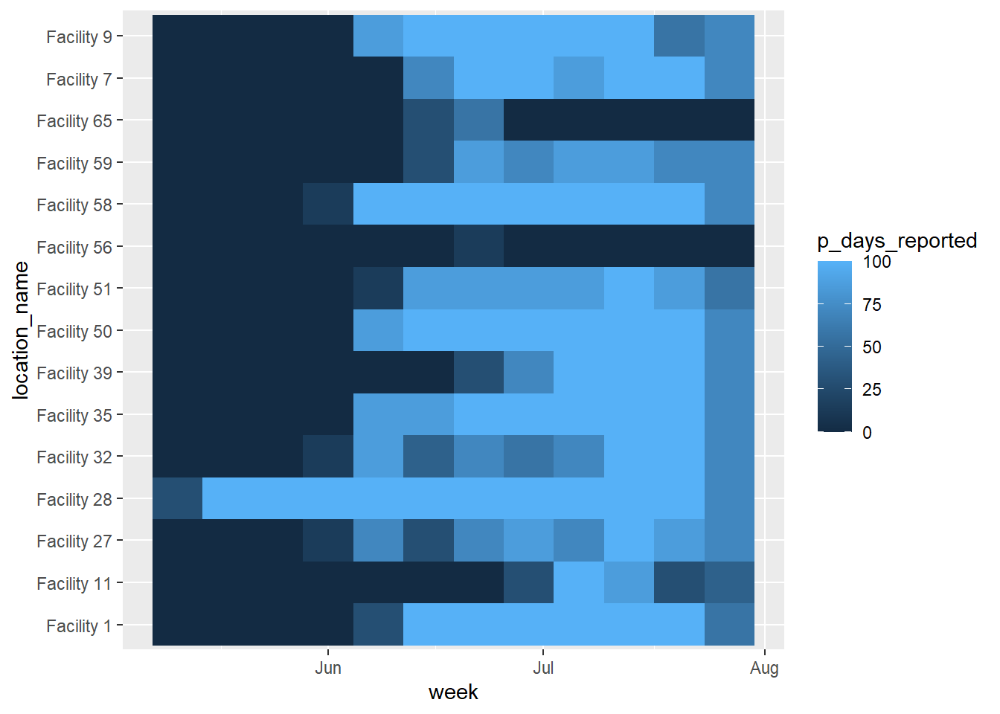
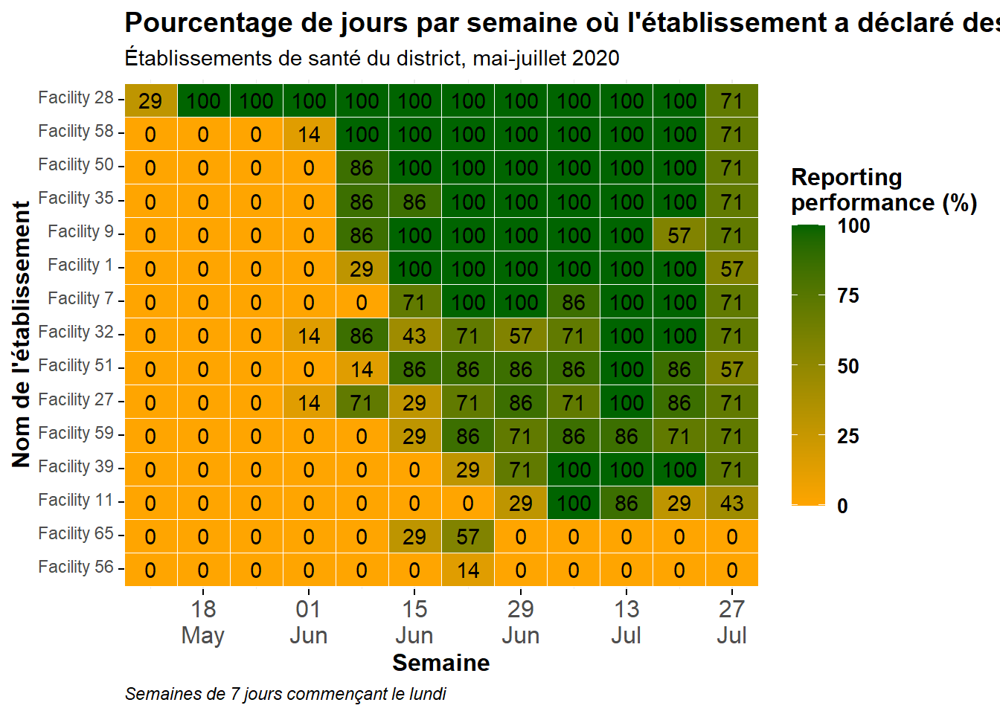

35 Graphiques thermiques
Les diagrammes de chaleur, également connus sous le nom de “cartes de chaleur” ou “tuiles de chaleur”, peuvent être des visualisations utiles lorsqu’on essaie d’afficher 3 variables (axe des x, axe des y et remplissage). Nous présentons ci-dessous deux exemples :
- Une matrice visuelle des événements de transmission par âge (“qui a infecté qui”).
- Le suivi des métriques de déclaration dans de nombreux établissements/juridictions au fil du temps.


35.1 Préparation
Chargement des paquets
Ce morceau de code montre le chargement des paquets nécessaires aux analyses. Dans ce manuel, nous mettons l’accent sur p_load() de pacman, qui installe le paquet si nécessaire et le charge pour l’utiliser. Vous pouvez également charger les paquets installés avec library() de base R. Voir la page sur bases de R pour plus d’informations sur les paquets R.
pacman::p_load(
tidyverse, # manipulation et visualisation de données
rio, # importation de données
lubridate # travail avec les dates
)Ensembles de données
Cette page utilise la liste de cas d’une épidémie simulée pour la section de la matrice de transmission, et un jeu de données séparé du nombre quotidien de cas de paludisme par établissement pour la section du suivi des mesures. Ils sont chargés et nettoyés dans leurs sections individuelles.
35.2 Matrice de transmission
Les tuiles thermiques peuvent être utiles pour visualiser les matrices. Un exemple est d’afficher “qui a infecté qui” dans une épidémie. Cela suppose que vous disposiez d’informations sur les événements de transmission.
Notez que la page Recherche des contacts contient un autre exemple de création d’une matrice de contacts en tuiles thermiques, à l’aide d’un ensemble de données différent (peut-être plus simple) où les âges des cas et leurs sources sont soigneusement alignés sur la même ligne du cadre de données. Ces mêmes données sont utilisées pour réaliser une carte de densité dans la page Astuces de ggplot. L’exemple ci-dessous part d’une liste de cas et implique donc une manipulation considérable des données avant d’obtenir un cadre de données traçable. Il existe donc de nombreux scénarios parmi lesquels choisir…
Nous commençons à partir de la liste de cas d’une épidémie d’Ebola simulée. Si vous souhaitez nous suivre, cliquez pour télécharger la linelist “propre” (en tant que fichier .rds). Importez vos données avec la fonction import() du paquet rio (elle accepte de nombreux types de fichiers comme .xlsx, .rds, .csv - voir la page Importation et exportation pour plus de détails).
Les 50 premières lignes de la liste de lignes sont présentées ci-dessous à titre de démonstration :
linelist <- import("linelist_cleaned.rds")Dans cette linelist :
- Il y a une ligne par cas, identifié par
case_id.
- Il y a une colonne ultérieure
infectorqui contient lecase_idde l’infector, qui est aussi un cas dans la linelist
Préparation des données
Objectif : Nous devons obtenir un cadre de données de type “long” qui contient une ligne par route de transmission âge-âge possible, avec une colonne numérique contenant la proportion de cette ligne de tous les événements de transmission observés dans la liste de lignes.
Il faudra plusieurs étapes de manipulation des données pour y parvenir :
Créer un cadre de données pour les cas
Pour commencer, nous créons un cadre de données des cas, de leurs âges, et de leurs infecteurs - nous appelons ce cadre de données case_ages. Les 50 premières lignes sont affichées ci-dessous.
case_ages <- linelist %>%
select(case_id, infector, age_cat) %>%
rename("case_age_cat" = "age_cat")Création d’un cadre de données d’infecteurs
Ensuite, nous créons un cadre de données des infecteurs - pour l’instant, il est constitué d’une seule colonne. Il s’agit des identifiants des infecteurs de la liste de diffusion. Tous les cas n’ont pas un infecteur connu, nous supprimons donc les valeurs manquantes. Les 50 premières lignes sont affichées ci-dessous.
infectors <- linelist %>%
select(infector) %>%
drop_na(infector)Ensuite, nous utilisons des jointures pour obtenir l’âge des infecteurs. Ce n’est pas simple, car dans la linelist, les âges des infecteurs ne sont pas listés en tant que tels. Nous obtenons ce résultat en joignant le cas linelist aux infecteurs. Nous commençons par les infecteurs, et left_join() (ajoutons) la case linelist de sorte que la colonne infector id du cadre de données “baseline” de gauche rejoint la colonne case_id du cadre de données linelist de droite.
Ainsi, les données de l’enregistrement du cas de l’infecteur dans la linelist (y compris l’âge) sont ajoutées à la ligne de l’infecteur. Les 50 premières lignes sont affichées ci-dessous.
infector_ages <- infectors %>% # commence par infectors
left_join( # ajoute les données de la linelist à chaque infecteur
linelist,
by = c("infector" = "case_id")) %>% # faire correspondre l'infector à ses informations en tant que cas
select(infector, age_cat) %>% # ne conserve que les colonnes d'intérêt
rename("infector_age_cat" = "age_cat") # renommer pour plus de clartéEnsuite, nous combinons les cas et leurs âges avec les infecteurs et leurs âges. Chacun de ces cadres de données possède la colonne infector, elle est donc utilisée pour la jointure. Les premières lignes sont affichées ci-dessous :
ages_complete <- case_ages %>%
left_join(
infector_ages,
by = "infector") %>% # chacun a la colonne infector
drop_na() # supprime les lignes avec des données manquantes## Warning in left_join(., infector_ages, by = "infector"): Detected an unexpected many-to-many relationship between `x` and `y`.
## ℹ Row 1 of `x` matches multiple rows in `y`.
## ℹ Row 6 of `y` matches multiple rows in `x`.
## ℹ If a many-to-many relationship is expected, set `relationship = "many-to-many"` to silence this warning.Ci-dessous, un simple tableau croisé des chiffres entre les groupes d’âge des cas et des infecteurs. Des étiquettes ont été ajoutées pour plus de clarté.
table(cases = ages_complete$case_age_cat,
infectors = ages_complete$infector_age_cat)## infectors
## cases 0-4 5-9 10-14 15-19 20-29 30-49 50-69 70+
## 0-4 105 156 105 114 143 117 13 0
## 5-9 102 132 110 102 117 96 12 5
## 10-14 104 109 91 79 120 80 12 4
## 15-19 85 105 82 39 75 69 7 5
## 20-29 101 127 109 80 143 107 22 4
## 30-49 72 97 56 54 98 61 4 5
## 50-69 5 6 15 9 7 5 2 0
## 70+ 1 0 2 0 0 0 0 0Nous pouvons convertir ce tableau en un cadre de données avec data.frame() de base R, qui le convertit aussi automatiquement au format “long”, ce qui est souhaité pour le ggplot(). Les premières lignes sont présentées ci-dessous.
long_counts <- data.frame(table(
cas = ages_complete$case_age_cat,
infectors = ages_complete$infector_age_cat))Maintenant, nous faisons la même chose, mais nous appliquons prop.table() de base R au tableau pour qu’au lieu de compter, nous obtenions des proportions du total. Les 50 premières lignes sont affichées ci-dessous.
long_prop <- data.frame(prop.table(table(
cases = ages_complete$case_age_cat,
infectors = ages_complete$infector_age_cat)))Créer un diagramme de chaleur
Maintenant, nous pouvons enfin créer le graphique de chaleur avec le paquet ggplot2, en utilisant la fonction geom_tile(). Consultez la page Astuces de ggplot pour en savoir plus sur les échelles de couleur et de remplissage, en particulier la fonction scale_fill_gradient().
- Dans l’esthétique
aes()degeom_tile(), définissez x et y comme l’âge du cas et l’âge de l’infecteur.
- De plus, dans
aes(), mettez l’argumentfill =dans la colonneFreq- c’est la valeur qui sera convertie en une couleur de tuile.
- Définissez une couleur d’échelle avec
scale_fill_gradient()- vous pouvez spécifier les couleurs hautes et basses.- Notez que
scale_color_gradient()est différent ! Dans ce cas, vous voulez le remplissage
- Notez que
- Comme la couleur est faite via “fill”, vous pouvez utiliser l’argument
fill =danslabs()pour changer le titre de la légende.
ggplot(data = long_prop)+ # utilise des données longues, avec des proportions comme Freq
geom_tile( # visualisation en tuiles
aes(
x = cases, # l'axe des x est l'âge du cas
y = infectors, # l'axe des y est l'âge de l'infecteur
fill = Freq))+ # la couleur de la tuile correspond à la colonne Freq dans les données
scale_fill_gradient( # ajuste la couleur de remplissage des tuiles
low = "blue",
high = "orange")+
labs( # étiquettes
x = "Âge du cas",
y = "Âge du contaminateur",
title = "Qui a infecté qui",
subtitle = "Matrice de fréquence des événements de transmission",
fill = "Proportion de tous les événements de transmission" # titre de la légende
)
35.3 Rapport sur les mesures dans le temps
Souvent, en santé publique, un objectif est d’évaluer les tendances dans le temps pour de nombreuses entités (établissements, juridictions, etc.). Une façon de visualiser ces tendances dans le temps est un diagramme de chaleur où l’axe des x est le temps et l’axe des y sont les nombreuses entités.
Préparation des données
Nous commençons par importer un jeu de données de rapports quotidiens sur le paludisme provenant de nombreux établissements. Les rapports contiennent une date, une province, un district et un nombre de cas de paludisme. Voir la page Télécharger le manuel et les données pour savoir comment télécharger ces données. Voici les 30 premières lignes :
facility_count_data <- import("malaria_facility_count_data.rds")Agréger et résumer
L’objectif de cet exemple est de transformer les comptages quotidiens de cas de paludisme totaux de l’établissement (vus dans l’onglet précédent) en statistiques récapitulatives hebdomadaires des performances de déclaration de l’établissement - dans ce cas, la proportion de jours par semaine où l’établissement a déclaré des données. Pour cet exemple, nous allons montrer les données uniquement pour le District de Spring.
Pour ce faire, nous allons procéder aux étapes suivantes de gestion des données :
- Filtrer les données comme il convient (par lieu, par date).
- Créer une colonne hebdomadaire en utilisant
floor_date()du package lubridate.- Cette fonction renvoie la date de début de la semaine d’une date donnée, en utilisant une date de début spécifiée de chaque semaine (par exemple “Lundi”)
- Cette fonction renvoie la date de début de la semaine d’une date donnée, en utilisant une date de début spécifiée de chaque semaine (par exemple “Lundi”)
- Les données sont regroupées par les colonnes “lieu” et “semaine” pour créer des unités d’analyse de “semaine d’installation”.
- La fonction
summarise()crée de nouvelles colonnes pour refléter les statistiques sommaires par groupe de semaine d’installation :- Nombre de jours par semaine (7 - une valeur statique)
- Nombre de rapports reçus de la semaine d’installation (peut être plus de 7 !)
- Somme des cas de malaria rapportés par la semaine d’installation (juste pour l’intérêt)
- Nombre de jours uniques dans la semaine d’installation pour lesquels des données ont été rapportées.
Pourcentage des 7 jours par semaine d’installation pour lesquels des données ont été déclarées.
- Nombre de jours par semaine (7 - une valeur statique)
- Le cadre de données est joint avec
right_join()à une liste complète de toutes les combinaisons possibles de semaine d’installation, pour rendre l’ensemble de données complet. La matrice de toutes les combinaisons possibles est créée en appliquantexpand()aux deux colonnes du cadre de données tel qu’il est à ce moment-là dans la chaîne de production (représenté par.). Comme unright_join()est utilisé, toutes les lignes du cadre de donnéesexpand()sont conservées, et ajoutées àagg_weekssi nécessaire. Ces nouvelles lignes apparaissent avec des valeurs résuméesNA(manquantes).
Nous faisons ci-dessous une démonstration étape par étape :
# Créer un ensemble de données de résumé hebdomadaire
agg_weeks <- facility_count_data %>%
# Filtrez les données comme il se doit
filter(
District == "Spring",
data_date < as.Date("2020-08-01")) Maintenant, le jeu de données a 608 lignes, alors qu’il avait précédemment 3038.
Ensuite, nous créons une colonne week reflétant la date de début de la semaine pour chaque enregistrement. Ceci est réalisé avec le package lubridate et la fonction floor_date(), qui est définie sur “week” et pour que les semaines commencent le lundi (jour 1 de la semaine - le dimanche serait le 7). Les lignes du haut sont présentées ci-dessous.
agg_weeks <- agg_weeks %>%
# Créez une colonne semaine à partir de data_date
mutate(
week = lubridate::floor_date( # créer une nouvelle colonne de semaines
data_date, # colonne de date
unit = "week", # donne le début de la semaine
week_start = 1)) # les semaines commencent le lundi La nouvelle colonne de semaine est visible à l’extrême droite du cadre de données.
Maintenant, nous regroupons les données en semaines d’installation et les résumons pour produire des statistiques par semaine d’installation. Consultez la page sur les Tableaux descriptifs pour obtenir des conseils. Le regroupement en lui-même ne modifie pas la trame de données, mais il a un impact sur la façon dont les statistiques récapitulatives suivantes sont calculées.
Les lignes du haut sont présentées ci-dessous. Notez comment les colonnes ont complètement changé pour refléter les statistiques récapitulatives souhaitées. Chaque ligne reflète une semaine d’installation.
agg_weeks <- agg_weeks %>%
# Regroupement en semaines d'installation
group_by(location_name, week) %>%
# Créez des colonnes de statistiques récapitulatives sur les données groupées
summarize(
n_days = 7, # 7 jours par semaine
n_reports = dplyr::n(), # nombre de rapports reçus par semaine (peut être >7)
malaria_tot = sum(malaria_tot, na.rm = T), # nombre total de cas de paludisme signalés
n_days_reported = length(unique(data_date)), # nombre de jours uniques de déclaration par semaine
p_days_reported = round(100*(n_days_reported / n_days))) %>% # pourcentage de jours de déclaration
ungroup(location_name, week) #ungroup() alors expand() marche dans les prochaines etapesEnfin, nous exécutons la commande ci-dessous pour nous assurer que TOUTES les semaines d’installation possibles sont présentes dans les données, même si elles étaient absentes auparavant.
Nous utilisons un right_join() sur lui-même (l’ensemble de données est représenté par “.”) mais il a été étendu pour inclure toutes les combinaisons possibles des colonnes week et location_name. Voir la documentation sur la fonction expand() dans la page sur Pivoter les donnees. Avant d’exécuter ce code, l’ensemble de données contient 107 lignes.
# Créez un cadre de données pour chaque semaine d'installation possible.
expanded_weeks <- agg_weeks %>%
tidyr::expand(location_name, week) # étendre le cadre de données pour inclure toutes les combinaisons possibles établissement-semaineVoici expanded_weeks, avec 180 lignes:
Avant d’exécuter ce code, agg_weeks contient 107 lignes.
# Utilisez une jointure à droite avec la liste étendue des semaines d'installation pour combler les lacunes dans les données.
agg_weeks <- agg_weeks %>%
right_join(expanded_weeks) %>% # Assurez-vous que toutes les combinaisons possibles de semaines d'installation apparaissent dans les données.
mutate(p_days_reported = replace_na(p_days_reported, 0)) # Convertir les valeurs manquantes en 0 ## Joining with `by = join_by(location_name, week)`Après avoir exécuté ce code, agg_weeks contient 180 lignes.
Créer un graphique de chaleur
Le ggplot() est réalisé en utilisant geom_tile() du paquet ggplot2 :
- Les semaines sur l’axe des x sont transformées en dates, permettant l’utilisation de
scale_x_date().
- L’axe des ordonnées affiche tous les noms des établissements.
- Le “remplissage” est “p_days_reported”, la performance pour cette semaine d’installation (numérique).
scale_fill_gradient()est utilisé sur le remplissage numérique, en spécifiant des couleurs pour le haut, le bas, etNA.
- La fonction
scale_x_date()est utilisée sur l’axe des x pour spécifier les étiquettes toutes les 2 semaines et leur format.
- Les thèmes d’affichage et les étiquettes peuvent être ajustés si nécessaire.
Basique
Un graphique thermique de base est produit ci-dessous, en utilisant les couleurs, les échelles, etc. par défaut. Comme expliqué ci-dessus, dans le aes() pour le geom_tile() vous devez fournir une colonne pour l’axe des x, une colonne pour l’axe des y, et une colonne pour le fill =. Le remplissage est la valeur numérique qui présente comme couleur de tuile.
ggplot(data = agg_weeks)+
geom_tile(
aes(x = week,
y = location_name,
fill = p_days_reported))
Tracé nettoyé
Nous pouvons améliorer l’apparence de ce graphique en ajoutant des fonctions ggplot2 supplémentaires, comme indiqué ci-dessous. Voir la page sur les astuces de ggplot pour plus de détails.
ggplot(data = agg_weeks)+
# affiche les données sous forme de tuiles
geom_tile(
aes(x = week,
y = location_name,
fill = p_days_reported),
color = "white")+ # lignes de grille blanches
scale_fill_gradient(
low = "orange",
high = "darkgreen",
na.value = "grey80")+
# axe des dates
scale_x_date(
expand = c(0,0), # supprimer l'espace supplémentaire sur les côtés
date_breaks = "2 weeks", # étiquettes toutes les 2 semaines
date_labels = "%d\n%b")+ # le format est jour sur mois (\n dans la nouvelle ligne)
# thèmes esthétiques
theme_minimal()+ # simplifier l'arrière-plan
theme(
legend.title = element_text(size=12, face="bold"),
legend.text = element_text(size=10, face="bold"),
legend.key.height = grid::unit(1, "cm"), # hauteur de la clé de légende
legend.key.width = grid::unit(0.6, "cm"), # largeur de la clé de légende
axis.text.x = element_text(size=12), # taille du texte de l'axe
axis.text.y = element_text(vjust=0.2), # alignement du texte de l'axe
axis.ticks = element_line(size=0.4),
axis.title = element_text(size=12, face="bold"), # taille et gras du titre de l'axe
plot.title = element_text(hjust=0,size=14,face="bold"), # titre aligné à droite, large, gras
plot.caption = element_text(hjust = 0, face = "italic"), # légende alignée à droite et en italique
)+
# étiquettes du graphique
labs(x = "Semaine",
y = "Nom de l'établissement",
fill = "Reporting\nperformance (%)", # titre de la légende, car la légende montre le remplissage
title = "Pourcentage de jours par semaine où l'établissement a déclaré des données",
subtitle = "Établissements de santé du district, mai-juillet 2020",
caption = "Semaines de 7 jours commençant le lundi")Axe des y ordonné
Actuellement, les installations sont ordonnées “alpha-numériquement” de bas en haut. Si vous voulez ajuster l’ordre des installations de l’axe des y, convertissez-les en facteur de classe et fournissez l’ordre. Voir la page sur les Facteurs pour des conseils.
Puisqu’il y a beaucoup d’installations et que nous ne voulons pas les écrire toutes, nous allons essayer une autre approche - classer les installations dans un cadre de données et utiliser la colonne de noms résultante comme ordre de niveau de facteur. Ci-dessous, la colonne location_name est convertie en un facteur, et l’ordre de ses niveaux est établi sur la base du nombre total de jours de déclaration déposés par l’installation sur l’ensemble de la période.
Pour ce faire, nous créons un cadre de données qui représente le nombre total de rapports par établissement, classés par ordre croissant. Nous pouvons utiliser ce vecteur pour ordonner les niveaux de facteurs dans le graphique.
facility_order <- agg_weeks %>%
group_by(location_name) %>%
summarize(tot_reports = sum(n_days_reported, na.rm=T)) %>%
arrange(tot_reports) # ordre ascendantVoir le cadre de données ci-dessous :
Utilisez maintenant une colonne du cadre de données ci-dessus (facility_order$location_name) comme ordre des niveaux de facteur de location_name dans le cadre de données agg_weeks :
# charger le paquet
pacman::p_load(forcats)
# créer le facteur et définir les niveaux manuellement
agg_weeks <- agg_weeks %>%
mutate(location_name = fct_relevel(
location_name, facility_order$location_name)
)Et maintenant, les données sont à nouveau tracées, le nom de l’emplacement étant un facteur ordonné :
ggplot(data = agg_weeks)+
# afficher les données sous forme de tuiles
geom_tile(
aes(x = week,
y = location_name,
fill = p_days_reported),
color = "white")+ # lignes de grille blanches
scale_fill_gradient(
low = "orange",
high = "darkgreen",
na.value = "grey80")+
# axe des dates
scale_x_date(
expand = c(0,0), # supprimer l'espace supplémentaire sur les côtés
date_breaks = "2 weeks", # étiquettes toutes les 2 semaines
date_labels = "%d\n%b")+ # le format est jour sur mois (\n dans la nouvelle ligne)
# thèmes esthétiques
theme_minimal()+ # simplifier l'arrière-plan
theme(
legend.title = element_text(size=12, face="bold"),
legend.text = element_text(size=10, face="bold"),
legend.key.height = grid::unit(1, "cm"), # hauteur de la clé de légende
legend.key.width = grid::unit(0.6, "cm"), # largeur de la clé de légende
axis.text.x = element_text(size=12), # taille du texte de l'axe
axis.text.y = element_text(vjust=0.2), # alignement du texte de l'axe
axis.ticks = element_line(size=0.4),
axis.title = element_text(size=12, face="bold"), # taille et gras du titre de l'axe
plot.title = element_text(hjust=0,size=14,face="bold"), # titre aligné à droite, large, gras
plot.caption = element_text(hjust = 0, face = "italic"), # légende alignée à droite et en italique
)+
# étiquettes du graphique
labs(x = "Semaine",
y = "Nom de l'établissement",
fill = "Reporting\nperformance (%)", # titre de la légende, car la légende montre le remplissage
title = "Pourcentage de jours par semaine où l'établissement a déclaré des données",
subtitle = "Établissements de santé du district, mai-juillet 2020",
caption = "Semaines de 7 jours commençant le lundi")Afficher les valeurs
Vous pouvez ajouter une couche geom_text() au dessus des tuiles, pour afficher les numéros réels de chaque tuile. Attention, cela peut ne pas être joli si vous avez beaucoup de petites tuiles !
Le code suivant a été ajouté : geom_text(aes(label = p_days_reported)). Ceci ajoute du texte sur chaque tuile. Le texte affiché est la valeur assignée à l’argument label =, qui dans ce cas a été fixé à la même colonne numérique p_days_reported qui est aussi utilisée pour créer le gradient de couleur.
ggplot(data = agg_weeks)+
# affiche les données sous forme de tuiles
geom_tile(
aes(x = week,
y = location_name,
fill = p_days_reported),
color = "white")+ # lignes de grille blanches
# Texte
geom_text(
aes(
x = week,
y = location_name,
label = p_days_reported))+ # ajouter le texte au dessus de la tuile
# remplir l'échelle
scale_fill_gradient(
low = "orange",
high = "darkgreen",
na.value = "grey80")+
# axe des dates
scale_x_date(
expand = c(0,0), # supprimer l'espace supplémentaire sur les côtés
date_breaks = "2 weeks", # étiquettes toutes les 2 semaines
date_labels = "%d\n%b")+ # le format est jour sur mois (\n dans la nouvelle ligne)
# thèmes esthétiques
theme_minimal()+ # simplifier l'arrière-plan
theme(
legend.title = element_text(size=12, face="bold"),
legend.text = element_text(size=10, face="bold"),
legend.key.height = grid::unit(1, "cm"), # hauteur de la clé de légende
legend.key.width = grid::unit(0.6, "cm"), # largeur de la clé de légende
axis.text.x = element_text(size=12), # taille du texte de l'axe
axis.text.y = element_text(vjust=0.2), # alignement du texte de l'axe
axis.ticks = element_line(size=0.4),
axis.title = element_text(size=12, face="bold"), # taille et gras du titre de l'axe
plot.title = element_text(hjust=0,size=14,face="bold"), # titre aligné à droite, large, gras
plot.caption = element_text(hjust = 0, face = "italic"), # légende alignée à droite et en italique
)+
# étiquettes du graphique
labs(x = "Semaine",
y = "Nom de l'établissement",
fill = "Reporting\nperformance (%)", # titre de la légende, car la légende montre le remplissage
title = "Pourcentage de jours par semaine où l'établissement a déclaré des données",
subtitle = "Établissements de santé du district, mai-juillet 2020",
caption = "Semaines de 7 jours commençant le lundi")